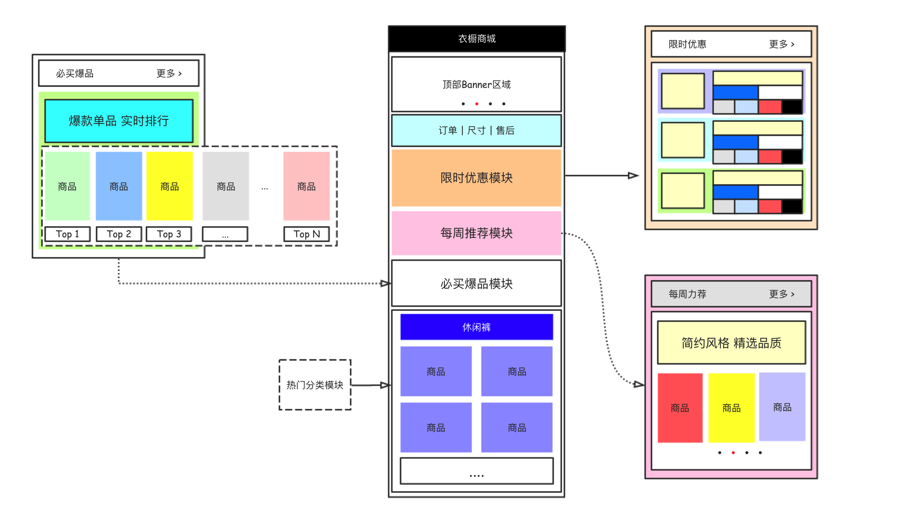

本文简单说明衣橱商城首页界面的实现过程，包括对商城首页的结构分析、首页各个区域模块的数据处理以及模块化的抽取等内容。
1.0 最终实现效果 这里先给出最终实现效果图，并贴出首页(home/index.wxml和home/index.wxss)文件中的代码结构。
1 2 3 4 5 6 7 8 9 10 11 12 13 14 15 16 17 18 19 20 21 22 23 24 25 26 //(1) home/index.wxml文件内容 <import src ='../../src/lib/template/bannerSwiper/bannerSwiper.wxml' /> <import src ='../../src/lib/template/timeLimit/timeLimit.wxml' /> <import src ='../../src/lib/template/hotCategory/hotCategory.wxml' /> <import src ='../../src/lib/template/mustBuy/mustBuy.wxml' /> <import src ='../../src/lib/template/weekly/weekly.wxml' /> <template is ='bannerSwiperTemplate' data ='{{banners}}' > </template > <i-tabview itemArray ='{{ itemArray }}' > </i-tabview > <template is ='timeLimitViewTemplate' data ='{{timeLimitListData}}' > </template > <template is ='weeklyViewTemplate' data ='{{weeklyData}}' > </template > <template is ='mustBuyTemplate' data ='{{topListObj}}' > </template > <template is ='hotViewTemplate' data ='{{hotListData}}' > </template >
1 2 3 4 5 6 7 8 9 //(2 ) home/index.wxss 文件内容 @import "../../src/lib/style/headerView.wxss" ;@import "../../src/lib/template/timeLimit/timeLimit.wxss" ;@import "../../src/lib/template/hotCategory/hotCategory.wxss" ;@import "../../src/lib/template/mustBuy/mustBuy.wxss" ;@import "../../src/lib/template/weekly/weekly.wxss" ;@import "../../src/lib/template/bannerSwiper/bannerSwiper.wxss" ;
总结 **我们在做任何应用的时候，其实要做的无非两件事件，界面处理和业务逻辑处理 **。简单来说我们可以把任何的需求拆分成UI界面效果和数据处理两部分，通常UI界面效果需要根据特定的数据来实现，或者UI界面由数据进行驱动。如果还要再加一点能力，那也许就是拆分的能力了，即把大的模块拆分成一个个小的适合处理模块的能力。比如这个商城项目，我们首先把整个应用划分为首页商品展示、购物车、订单和支付等大的模块，然后每个大的模块中都包含一堆页面，这样就划分到具体页面的粒度了，如果页面相对来说比较复杂，那么还可以继续拆分。
这里我们需要实现首页这个模块，需要设计并实现首页的UI视图，该视图需要根据服务器端提供的数据来显示，下文将主要从UI界面的处理 和服务器端数据 处理两个维度来说明具体的实现过程。
2.0 首页数据的处理 首页的数据处理相对简单，大概可以分成几个步骤。
❏ 开通云开发功能创建环境并在文件存储模块保存图片资源
这里简单给出首页视图和需要用到数据之间的对应关系。
在实现首页的时候，我们可以把整个页面简单划分为：(1) 顶部bannaer区域、(2) 订单|售后区域、(3) 限时优惠区域、(4) 每周推荐区域、(5) 必买爆品区域以及(6)热门分类等6个模块。这些模块中除订单|售后区域使用之前封装的自定义组件传递itemArray数组外，其它模块的数据都需要通过和服务器端数据库进行通信来进行获取，其中部分数据在获取后可能还需要做额外的处理。这里贴出js文件中对应的业务逻辑处理相关代码。
1 2 3 4 5 6 7 8 9 10 11 12 13 14 15 16 17 18 19 20 21 22 23 24 25 26 27 28 29 30 31 32 33 34 35 36 37 38 39 40 41 42 43 44 45 46 47 48 49 50 51 52 53 54 55 56 57 58 59 60 61 62 63 64 65 66 67 68 69 70 71 72 73 74 75 76 77 78 79 80 81 82 83 84 85 86 87 88 89 90 91 92 93 94 95 96 97 98 99 100 101 102 103 104 105 106 107 108 109 110 111 112 113 114 115 116 117 118 119 120 121 122 123 124 125 126 127 128 129 130 131 132 133 134 135 136 137 138 139 140 141 142 143 144 145 146 147 148 149 150 151 152 153 154 Page({ data : { hotListData : [], timeLimitListData :[], banners : [], itemArray : [ { srcImg : "../../../../src/img/order.png" , des : "我的订单" }, { srcImg : "../../../../src/img/size.png" , des : "衣物尺寸" }, { srcImg : "../../../../src/img/service.png" , des : "售后服务" }, ], weeklyData :[], topListObj :{} }, onLoad : function (options ) var that = this ; wx.cloud.init(); const db = wx.cloud.database(); db.collection("banners" ).get({ success : function (res ) that.setData({ banners :res.data }) } }) function PrefixInteger (num, length ) return (Array (length).join('0' ) + num).slice(-length); } db.collection("timeLimitList" ).doc("5bcbf152b91567be916f95ce" ).get({ success : function (res ) var data = res.data.timeLimitList that.setData({ timeLimitListData : data }) for (var i = 0 ; i < data.length ; i++) { (function (j ) var endTimeStr = data[j].end; var startTimeStr = data[j].start; var timer = 'timeLimitListData[' + j + '].timer' var isStart = 'timeLimitListData[' + j + '].isStart' setInterval (function ( var resultIsStart = true ; var now = new Date ().getTime(); var end = new Date (endTimeStr).getTime(); var start = new Date (startTimeStr).getTime(); if (now - start < 0 ) { resultIsStart = false ; } var d, h, m, s, timeResult = "已结束" ; var leftTime = end - now; if (leftTime >= 0 ) { h = PrefixInteger(Math .floor(leftTime / 1000 / 60 / 60 % 24 ), 2 ); m = PrefixInteger(Math .floor(leftTime / 1000 / 60 % 60 ), 2 ); s = PrefixInteger(Math .floor(leftTime / 1000 % 60 ), 2 ); timeResult = "距结束" + h + ":" + m + ":" + s; } that.setData({ [timer]: timeResult, [isStart]: resultIsStart, }); }, 1000 ); })(i) } } }) db.collection("weeklyData" ).doc("5bcaa4acb91567be916f204a" ).get({ success : function (res ) that.setData({ weeklyData : res.data.weeklyData }) } }) db.collection("topList" ).doc("5bcae5eeb91567be916f3837" ).get({ success : function (res ) that.setData({ topListObj : res.data, }) } }) db.collection("hotList" ).doc("5bcb3457b91567be916f5510" ).get({ success : function (res ) that.setData({ hotListData : res.data.hotList, }) } }) }, onReady : function ( }, onShow : function ( }, onHide : function ( }, onUnload : function ( }, onPullDownRefresh : function ( }, onReachBottom : function ( }, onShareAppMessage : function ( } })
代码说明 代码中在设置页面数据的时候调用的是that.setData方法，为什么不用this.setData呢？需要注意的是因为JavaScript语言本身的特性，导致success回调函数中this的指向跟页面中全局this不同 ，所以如果直接使用this来调用setData方法是不正确的。上面的代码中我们先把全局的this保存给that变量，然后当我们需要修改data属性中数据的时候都通过调用that.setData方法实现。还有一个注意点，就是在调用API访问数据库中数据的时候一定要保证拥有对当前数据的操作权限 ，切记。
3.0 首页界面的处理 UI界面的处理其实也很简单，给出建议的处理流程：
❏ 拆分标签样式数据事件
因为首页的UI界面本身比较复杂，所以这里我尝试以如下的方式进行拆分，再各个击破。

在前文中相信大家已经看到最终的时候我是把每个小的模块都抽取成了模板，然后在home/index.wxml和home/index.wxss文件中导入模板(模板的样式)，使用模板并传递参数来实现的。这是简单优化后的代码，我自己在实现的时候开始其实是把所有代码都写在一坨的，建议大家在开发的时候直接一步到位多使用模板和自定义组件的方式来组织代码 ，这样会更清晰，可读性也更好。
在所有的这些模块中，我个人认为限时优惠模块、每周推荐模块和必买爆品模块是稍微复杂一点的，其中最难处理的应该要数限时优惠模块，因为该模块中用到的组件相对较多，而且数据处理的js代码也会更多一些。该项目中所有的代码您都可以在我文末提供的源码中获取，所以这里就不一个劲的贴代码了。我仅仅指出比较复杂或者需要注意的地方。
复杂UI界面和数据处理： 限时优惠的进度限时和倒计时处理、 每周推荐模块的UI处理等。
这里简单贴一下现在项目的文件结构吧。
1 2 3 4 5 6 7 8 9 10 11 12 13 14 15 16 17 18 19 20 21 22 23 24 25 26 27 28 29 30 31 32 33 34 35 36 37 38 39 40 41 42 43 44 45 46 47 48 49 50 bogon:weapp wendingding$ tree -L 5 . ├── app.js ├── app.json ├── app.wxss ├── pages │ ├── cart │ ├── category │ ├── home │ │ ├── index.js │ │ ├── index.json │ │ ├── index.wxml │ │ └── index.wxss │ └── mine ├── project.config.json ├── src │ ├── img │ │ ├── cart.png | | | ... 省略 │ │ ├── size.png │ │ └── stayPayment.png │ └── lib │ ├── component │ │ ├── iview │ │ └── tabview │ │ ├── tabview.js │ │ ├── tabview.json │ │ ├── tabview.wxml │ │ └── tabview.wxss │ ├── style │ │ └── headerView.wxss │ └── template │ ├── bannerSwiper │ │ ├── bannerSwiper.wxml │ │ └── bannerSwiper.wxss │ ├── hotCategory │ │ ├── hotCategory.wxml │ │ └── hotCategory.wxss │ ├── mustBuy │ │ ├── mustBuy.wxml │ │ └── mustBuy.wxss │ ├── timeLimit │ │ ├── timeLimit.wxml │ │ └── timeLimit.wxss │ └── weekly │ ├── weekly.wxml │ └── weekly.wxss └── utils └── util.js
点击获取项目源码仓库